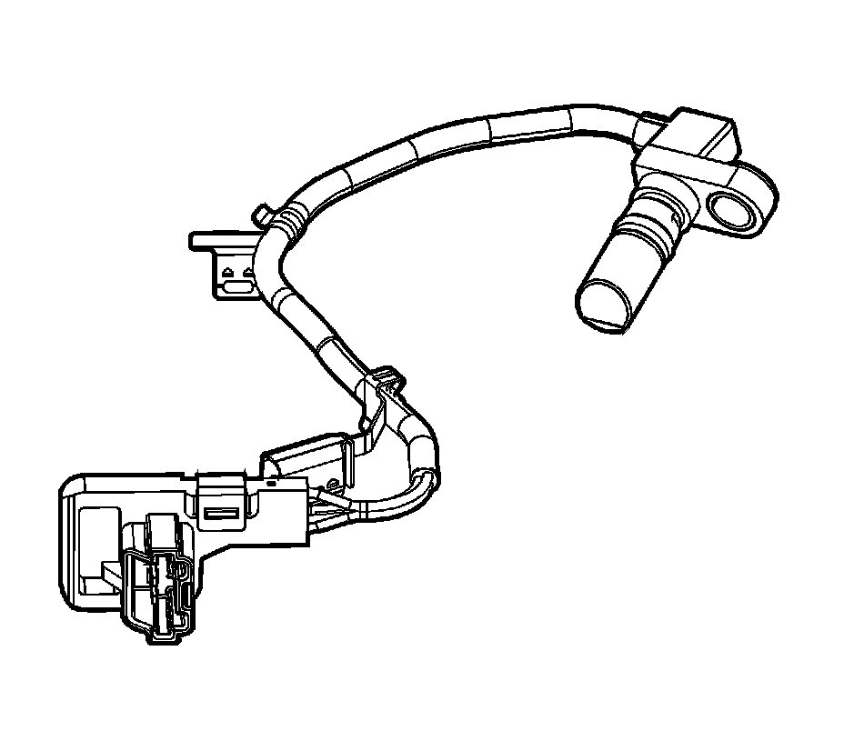
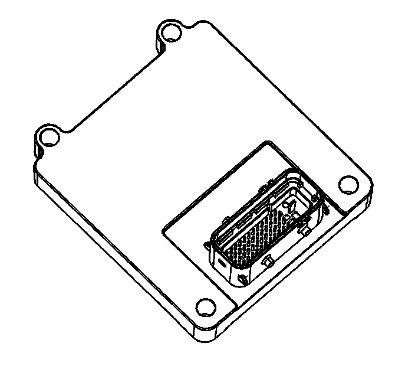
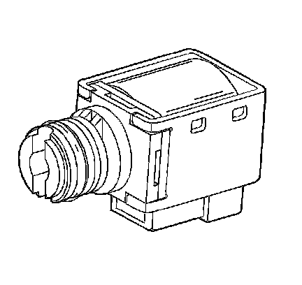
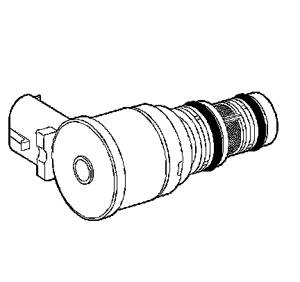
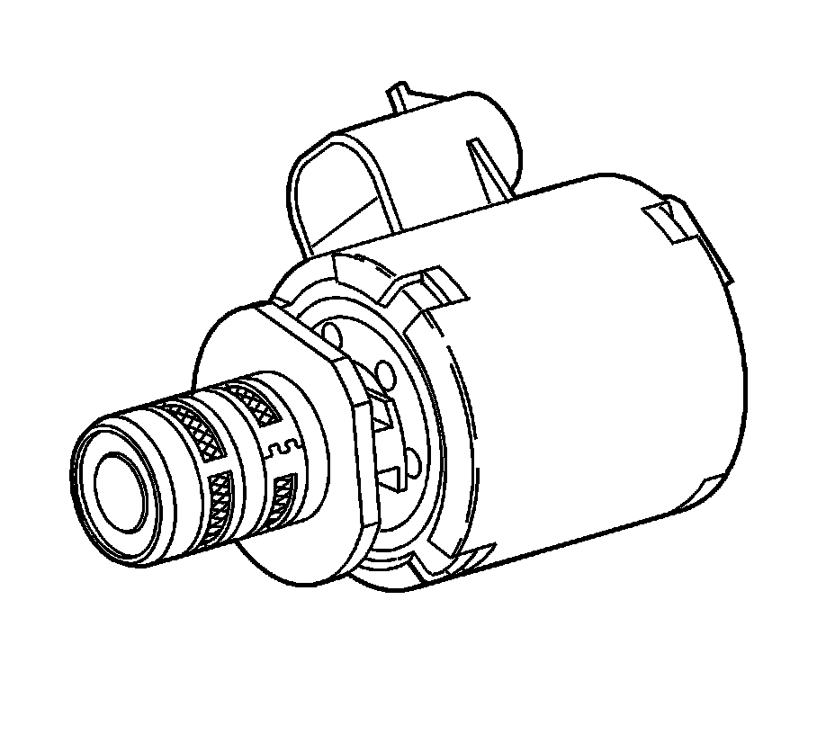
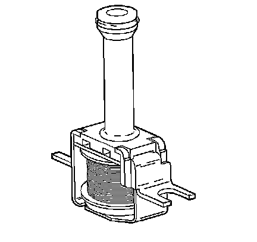
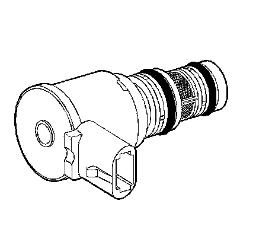
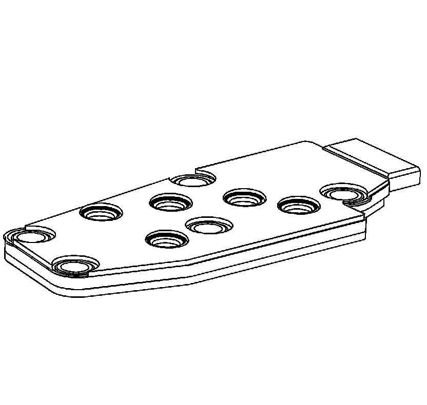
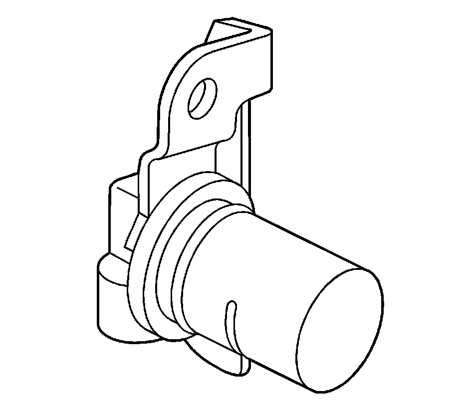

Electronic Component Description (TCM)
Electronic Component Description (TCM)
Automatic Transmission Input Speed Sensor Assembly
Automatic Transmission Input Speed Sensor Assembly:

The Automatic Transmission Input Speed Sensor (AT ISS) Assembly is a hall-effect sensor that produces an input speed signal as the turbine shaft rotor teeth pass in front of the sensor tip.
The AT ISS is made of a permanent magnet with an iron pole piece and an integrated circuit (IC) chip with a two-element transducer molded into a plastic housing. The two-element transducer functions as an on/off switch by sensing changes in the magnetic field strength. The dual element design greatly increases the sensor's switching accuracy.
Because the turbine shaft is splined to the torque converter, it spins at engine speed. As the turbine shaft spins, the rotor teeth pass in front of the sensor tip, changing the magnetic field. As a result, the transducers are sensing high and low magnetic signals. The IC chip will then amplify and filter the high and low signal. Therefore, whenever the engine is running, the sensor will produce high and low signals proportional to turbine shaft speed. The more rotor teeth passing by the sensor's magnetic field in a specific amount of time, the faster the turbine shaft is spinning.
The ISS assembly is attached to the pump cover with the tip of the sensor passing though the stator shaft and sleeve. The ISS mounting bolt passes through a steel insert and into a threaded hole in the pump cover. The ISS wiring harness is routed and secured to the pump cover with clip-on brackets. At the transmission control module (TCM), the signal is electronically converted and is interpreted as transmission input speed. The TCM uses transmission input speed together with the transmission output speed to provide shift energy and torque management capabilities, improved shift quality (feel), increased TCC function, gear ratios that are more accurate and enhanced transmission diagnostics.
Electronic Component Description (TCM)

The transmission control module (TCM) (5.3L only) is mounted near the lower left front of the engine and connects directly to the engine wiring harness. A single 49-way connector is used to make the connection between the vehicle wiring and the TCM. The TCM is an electronic control module that receives input or provides output in order to control the operation of the 4L60 automatic transmission.
The TCM receives the following inputs from the engine control module (ECM):
^ Engine speed and torque values
^ Engine intake air temperature (IAT), accelerator pedal position (APP) information
^ Engine coolant temperature (ECT)
^ Kick-down request
^ Traction control status
^ Driver selected shift mode
^ Air-conditioning (A/C) status
^ Cruise control status
The ECM provides this data to the TCM through the controller area network (CAN). The CAN is a 2-wire communication connection between the 2 controllers.
Other TCM inputs are the following:
^ Battery and ignition voltage
^ Brake switch status
^ Transmission manual shift shaft switch assembly
^ Transmission fluid temperature (TFT)
^ Transmission vehicle speed sensor (VSS)
The TCM provides the following outputs in order to control the automatic transmission:
^ Shift solenoids to control transmission shifting
^ TCC PWM solenoid operation controls the apply and release of the torque converter clutch ASM
^ Pressure control solenoid (PCS) regulates transmission line pressure
Other TCM outputs provided to the ECM are the following:
^ MIL illumination request
^ Vehicle speed
^ Transmission input speed
^ Transmission fluid temperature
^ Commanded gear status
^ TCC status
^ Torque reduction requests
^ Manual shift shaft switch status
1-2 and 2-3 Shift Solenoid Valves
1-2 and 2-3 Shift Solenoid Valves:

The 1-2 and 2-3 shift solenoid valves (also called A and B solenoids) are identical devices that control the movement of the 1-2 and 2-3 shift valves (the 3-4 shift valve is not directly controlled by a shift solenoid). The solenoids are normally-open exhaust valves that work in four combinations to shift the transmission into different gears.
The transmission control module (TCM) energizes each solenoid by grounding the solenoid through an internal quad driver. This sends current through the coil winding in the solenoid and moves the internal plunger out of the exhaust position. When ON, the solenoid redirects fluid to move a shift valve.
Important: The manual valve hydraulically can override the shift solenoids. Only in D4 do the shift solenoid states totally determine what gear the transmission is in. In the other manual valve positions, the transmission shifts hydraulically and the shift solenoid states CATCH UP when the throttle position and the vehicle speed fall into the correct ranges.
The TCM-controlled shift solenoids eliminate the need for TV and governor pressures to control shift valve operation.
3-2 Shift Solenoid Valve Assembly
3-2 Shift Solenoid Valve Assembly:

The 3-2 shift solenoid valve assembly is a normally-closed, 3-port, ON/OFF device that is used in order to improve the 3-2 downshift. The solenoid regulates the release of the 3-4 clutch and the 2-4 band apply.
Transmission Pressure Control Solenoid
Transmission Pressure Control Solenoid:

The transmission pressure control solenoid is an electronic pressure regulator that controls pressure based on the current flow through its coil winding. The magnetic field produced by the coil moves the solenoid's internal valve which varies pressure to the pressure regulator valve.
The transmission control module (TCM) controls the pressure control solenoid by commanding current between 0.1-1.1 amps. This changes the duty cycle of the solenoid, which can range between 5-95 percent, typically less than 60 percent. High amperage (1.1 amps) corresponds to minimum line pressure, and low amperage (0.1 amp) corresponds to maximum line pressure, if the solenoid loses power, the transmission defaults to maximum line pressure.
The TCM commands the line pressure values, using inputs such as engine speed and throttle position sensor voltage.
The pressure control solenoid takes the place of the throttle valve or the vacuum modulator that was used on past model transmissions.
Torque Converter Clutch Solenoid Valve
Torque Converter Clutch Solenoid Valve:

The torque converter clutch (TCC) solenoid valve is a normally-open exhaust valve that is used to control torque converter clutch apply and release. When grounded (energized) by the transmission control module (TCM), the TCC solenoid valve stops converter signal oil from exhausting. This causes converter signal oil pressure to increase and move the TCC solenoid valve into the apply position.
Torque Converter Clutch Pulse Width Modulation Solenoid Valve
Torque Converter Clutch Pulse Width Modulation Solenoid Valve:

The torque converter clutch pulse width modulation solenoid valve controls the fluid acting on the converter clutch valve. The converter clutch valve controls the torque converter clutch (TCC) apply and release. This solenoid is attached to the control valve body assembly within the transmission. The TCC PWM solenoid valve provides a smooth engagement of the torque converter clutch by operating during a duty cycle percent of ON time.
Transmission Fluid Pressure (TFP) Manual Valve Position Switch
Transmission Fluid Pressure (TFP) Manual Valve Position Switch:

Important: Seven valid combinations and 2 invalid combinations are available from the transmission fluid pressure (TFP) manual valve position switch. Refer to the Transmission Fluid Pressure Manual Valve Position Switch Logic table for valid/invalid combinations for range signal circuits A, B and C.
The TFP manual valve position switch consists of 5 pressure switches (2 normally-closed and 3 normally-open) on the control valve body that sense whether fluid pressure is present in 5 different valve body passages. The combination of switches that are open and closed is used by the transmission control module (TCM) in order to determine the actual manual valve position. The TFP manual valve position switch, however, cannot distinguish between PARK and NEUTRAL because the monitored valve body pressures are identical in both cases.
The switches are wired to provide three signal lines that are monitored by the TCM. These signals are used to help control line pressure, torque converter clutch apply and shift solenoid valve operation. Voltage at each of the signal lines is either 0 or 12 volts.
In order to monitor the TFP manual valve position switch operation, the TCM compares the actual voltage combination of the switches to a TFP combination table stored in its memory.
The TFP manual valve position switch signal voltage can be measured from each pin-to-ground and compared to the combination table. On the automatic transmission (AT) wiring harness assembly, pin N is signal A, pin R is signal B, and pin P is signal C. With the AT wiring harness assembly connected and the engine running, a voltage measurement of these 3 lines will indicate a high reading (near 12 volts) when a circuit is open, and a low reading (zero volts) when the circuit is switched to ground.
The transmission fluid temperature (TFT) sensor is part of the TFP manual valve position switch assembly.
Vehicle Speed Sensor Assembly
Vehicle Speed Sensor Assembly:

The vehicle speed sensor (VSS) assembly provides vehicle speed information to the transmission control module (TCM). The VSS assembly is a permanent magnet (PM) generator. The PM generator produces a pulsing AC voltage as rotor teeth on the transmission output shaft pass through the sensor's magnetic field. The AC voltage level and the number of pulses increase as the speed of the vehicle increases. Output voltage varies with speed from a minimum of 0.5 volts at 100 RPM to more than 100 volts at 8,000 RPM. The TCM converts the pulsing voltage to vehicle speed. The TCM uses the vehicle speed signal to determine shift timing and torque converter clutch (TCC) scheduling.
Automatic Transmission Fluid Temperature Sensor
The automatic transmission fluid temperature (TFT) sensor is part of the automatic transmission fluid pressure (TFP) manual valve position switch. The TFT sensor is a resistor, or thermistor, which changes value based on temperature. The sensor has a negative-temperature coefficient. This means that as the temperature increases, the resistance decreases and as the temperature decreases, the resistance increases.
The transmission control module (TCM) supplies a 5-volt reference signal to the TFT sensor and measures the voltage drop in the circuit. When the transmission fluid is cold, the sensor resistance is high and the TCM detects high signal voltage. As the fluid temperature warms to a normal operating temperature, the resistance becomes less and the signal voltage decreases. Refer to Transmission Fluid Temperature Sensor Specifications for a complete comparison of sensor resistance, temperature and signal voltage.
The TCM uses the TFT sensor information to control shift quality and torque converter clutch (TCC) application.
Transmission Range Switch
Transmission Range Switch:

The transmission range (TR) switch is part of the park/neutral position (PNP) and backup lamp switch assembly, which is externally mounted on the transmission manual shaft. The TR switch contains four internal switches that indicate the transmission gear range selector lever position. The transmission control module (TCM) supplies ignition voltage to each switch circuit. As the gear range selector lever is moved, the state of each switch may change, causing the circuit to open or close. An open circuit or switch indicates a high voltage signal. A closed circuit or switch indicates a low voltage signal. The TCM detects the selected gear range by deciphering the combination of the voltage signals. The TCM compares the actual voltage combination of the switch signals to a TR switch combination chart stored in memory.